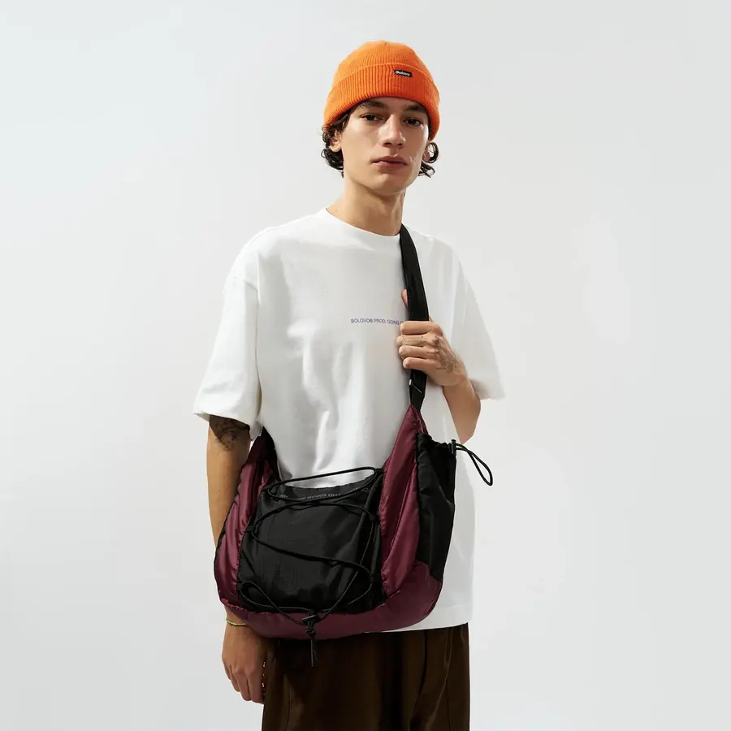

Em uma marca de streetwear, a bolsa é usada por cima da roupa e fica à vista o tempo todo. Por isso ela funciona bem para carregar o logo e completar uma coleção. Abaixo estão os modelos que mais produzimos para labels de rua, os materiais que combinam com cada estética e o caminho para lançar uma linha com lote pequeno.
Por que a bolsa é um bom produto para uma label
- Tamanho único: não exige grade de tamanhos P, M, G e GG como uma camiseta. Isso reduz o número de variações em estoque.
- Visibilidade: a bolsa aparece em qualquer foto de look, com o logo em evidência.
- Valor percebido pelo design: modelagem, ferragens e acabamento pesam mais no preço que o tecido em si.
- Complemento de coleção: combina com a roupa que a marca já vende e aumenta o valor de cada pedido.
Para produzir a sua linha, veja como trabalhamos com bolsas personalizadas a partir de 20 unidades.
Os 6 modelos streetwear mais pedidos na nossa produção
1. Shoulder bag e crossbody
Bolsa compacta, usada no ombro ou atravessada no corpo. É o modelo que mais produzimos para marcas de rua e o mais indicado para quem vai lançar um único produto. Funciona bem em nylon, oxford e lona, com fivelas e reguladores aparentes.
2. Pochete
Usada na cintura ou atravessada no peito. Tem modelagem simples, custo de produção menor e boa área frontal para logo e etiqueta. Serve como produto de entrada da marca, com preço mais acessível. Veja modelos e medidas em pochetes personalizadas e no guia de pochete personalizada.
3. Tote bag
Sacola de alça dupla com área de estampa grande. É boa para testar artes e para o cliente conhecer a marca gastando pouco. Em lona de algodão cru, tem visual autoral; em sarja preta, fica mais limpa e minimalista.
4. Mochila urbana e roll-top
Para marcas que querem um produto de preço mais alto. A roll-top, de fechamento enrolado no topo, e as mochilas com recortes técnicos pedem tecido mais resistente, como nylon de denier alto ou cordura. A linha Classic da CORDURA, por exemplo, usa nylon 6,6 de alta tenacidade em gramaturas de 330D a 1.000D, posicionada pela resistência à abrasão (fontes 1 e 2).
5. Sling bag
Bolsa de uma alça só, usada no peito ou nas costas. Combina com a estética techwear, que mistura roupa urbana e elementos utilitários. É compacta e tem acesso rápido ao bolso principal.
6. Gym bag urbana
Une streetwear e treino. Funciona para coleções com pegada atlética e para parcerias com academias, eventos e marcas fitness, com área ampla para a marca do parceiro.
Materiais que combinam com cada estética
| Material | Visual | Modelos indicados |
|---|---|---|
| Nylon | Técnico, utilitário | Shoulder bag, sling, pochete |
| Cordura | Técnico, robusto | Mochila roll-top, mochila urbana |
| Oxford | Liso, versátil | Shoulder bag, gym bag |
| Lona de algodão cru | Autoral, natural | Tote bag, shoulder bag |
| Sarja | Limpo, minimalista | Tote bag, pochete |
| Tecidos impermeáveis | Técnico | Mochila, sling |
Não produzimos peças em couro ou couro sintético. Fivelas, mosquetões, zíperes e etiquetas fazem a diferença entre um produto com identidade e um produto genérico. Para comparar os tecidos em detalhe, veja tipos de tecido para mochilas, e para escolher a aplicação do logo, bordado, silk ou sublimação.
Como produzir sem estoque grande
Com pedido mínimo de 20 peças por modelo e cor, dá para lançar uma cápsula enxuta, com um ou dois modelos, ver o que vende e só então aumentar. O processo na LS Confecções:
- Briefing: você envia referências e o uso. Não precisa de desenho técnico.
- Peça piloto: pronta em até 15 dias; o desenvolvimento custa em média R$ 600, conforme o modelo.
- Produção: até 25 dias úteis após aprovar a piloto.
A piloto aprovada também serve para fotos e pré-venda antes de o lote chegar. Veja os detalhes em peça piloto: como desenvolver o protótipo. Se a marca está começando do zero, leia como criar uma marca de bolsas.
Precifique antes de produzir
Defina o preço de venda e a margem antes de fechar o lote. Some ao custo de fábrica a embalagem, o frete, os impostos e as taxas de venda. O e-book do Sebrae sobre preço de venda explica o cálculo de markup a partir desses custos (fonte 3). Para fazer a conta com os seus números, use a calculadora de preço de marca.
Proteja o nome da label
Em streetwear, a marca é o produto. Antes de bordar o logo em centenas de peças, consulte a base do INPI. O Guia Básico do instituto orienta fazer a busca prévia, porque não se registra marca igual ou parecida com outra já registrada para produtos semelhantes (fonte 4).
O caminho prático
Escolha um ou dois modelos (shoulder bag e pochete são a combinação mais segura para começar), defina material e aplicação da marca, calcule o preço, aprove a piloto e produza um lote pequeno. Depois, aumente o que vendeu. Conheça a nossa página de bolsas streetwear personalizadas.
Perguntas frequentes
Qual modelo de bolsa streetwear lançar primeiro?
Na nossa produção, a shoulder bag e a pochete são os modelos mais pedidos por marcas de rua. São compactas, têm modelagem mais simples e boa área para o logo.
Qual o pedido mínimo para bolsas streetwear com a minha marca?
O mínimo é de 20 peças por modelo e cor.
Vocês produzem bolsas em couro ou couro sintético?
Não. Trabalhamos com nylon, poliéster, oxford, cordura, sarja, lona de algodão cru e tecidos impermeáveis.
Quanto tempo leva para produzir a linha?
A peça piloto fica pronta em até 15 dias e a produção leva até 25 dias úteis após a aprovação.
Fontes
- CORDURA® Classic Fabric: Technology, CORDURA® / INVISTA.
- CORDURA® Frequently Asked Questions, CORDURA® / INVISTA.
- Saiba como fazer seu preço de venda (e-book), Sebrae.
- Guia Básico de Marcas, Instituto Nacional da Propriedade Industrial (INPI).
Pronto para produzir sua linha streetwear?
Fabricação B2B de bolsas, mochilas e acessórios personalizados a partir de 20 unidades, em São Paulo. Fale direto com nosso comercial e receba uma proposta em minutos.
Solicitar orçamento